소방설비기사(기계분야) (2012-09-15 기출문제)
1과목: 소방원론
1. 휘발유 화재시 물을 사용하여 소화할 수 없는 이유로 가장 옳은 것은?
- 인화점이 물보다 낮기 때문이다.
- 비중이 물보다 작아 연소면을 확대되기 때문이다.
- 수용성이므로 물에 녹아 폭발이 확대되기 때문이다.
- 물과 반응하여 수소가스를 발생하기 때문이다.
(정답률: 72%)

2. 피난동선에 대한 계획으로 옳지 않은 것은?
- 피난동선은 가급적 일상 동선과 다르게 계획한다.
- 피난동선은 적어도 2개소의 안전장소를 확보한다.
- 피난동선의 말단은 안전장소이어야 한다.
- 피난동선은 간단명료해야 한다.
(정답률: 75%)
3. 조연성 가스에 해당하는 것은?
- 수소
- 일산화탄소
- 산소
- 에탄
(정답률: 71%)
4. 다음 중 착화온도가 가장 낮은 것은?
- 에틸알코올
- 톨루엔
- 등유
- 가솔린
(정답률: 48%)
5. 메탄이 완전 연소할 때의 연소 생성물을 옳게 나열 한 것은?
- H2O, HCl
- SO2, CO2
- SO2, HCl
- CO2, H2O
(정답률: 65%)
6. 다음 할로겐원소 중 원자번호가 가장 작은 것은?
- F
- Cl
- Br
- I
(정답률: 59%)
7. 22℃ 의 물 1톤을 소화약제로 사용하여 모두 증발시켰을 때 얻을 수 있는 냉각효과는 몇 kcal 인가?
- 539
- 617
- 539000
- 617000
(정답률: 47%)
8. 할로겐 화합물 소화설비에서 Halon 1211 약제의 분자식은?
- CF2BrCl
- CBr2ClF
- CCl2BrF
- BrC2ClF
(정답률: 72%)
9. 공기와 할론 1301의 혼합기체에서 할론 1301에 비해 공기의 확산속도는 약 몇 배 인가? (단, 공기의 평균분자량은29, 할론 1301의 분자량은 149 이다.)
- 2.27배
- 3.8배
- 5.17배
- 6.46배
(정답률: 51%)
10. 제2류 위험물에 해당하지 않는 것은?
- 유황
- 황화린
- 적린
- 황린
(정답률: 67%)
11. 분말 소화약제의 주성분이 아닌 것은?
- 황산알루미늄
- 탄산수소나트륨
- 탄산수소칼륨
- 제1인산암모늄
(정답률: 68%)
12. 연기감지기가 작동할 정도이고 가시거리가 20 ~ 30m에 해당하는 감광계수는 얼마인가?
- 0.1m-1
- 1.0m-1
- 2.0m-1
- 10m-1
(정답률: 67%)
13. 다음 중 분진폭발의 위험성이 가장 낮은 것은?
- 알루미늄분
- 유황
- 팽창질석
- 소맥분
(정답률: 69%)
14. 「건축물의 피난ㆍ방화구조 등의 기준에 관한 규칙」에 따른 바닥의 내화구조 기준으로 ( )에 알맞은 수치는?
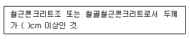
- 4
- 5
- 7
- 10
(정답률: 66%)
15. 마그네슘의 화재시 이산화탄소소화약제를 사용하면 안되는 주된 이유는?
- 마그네슘과 이산화탄소가 반응하여 흡열반응을 일으키기 때문이다.
- 마그네슘과 이산화탄소가 반응하여 가연성의 탄소가 생성되기 때문이다.
- 마그네슘이 이산화탄소에 녹기 때문이다.
- 이산화탄소에 의한 질식의 우려가 있기 때문이다.
(정답률: 58%)
16. 다음 중 비열이 가장 큰 것은?
- 물
- 금
- 수은
- 철
(정답률: 76%)
17. 연소시 백적색의 온도는 약 몇 ℃ 정도 되는가?
- 400
- 650
- 750
- 1300
(정답률: 61%)
18. 공기를 기준으로 한 CO2 가스 비중은 약 얼마인가? (단, 공기의 분자량은 29이다.)
- 0.81
- 1.52
- 2.02
- 2.51
(정답률: 71%)
19. 주된 연소의 형태가 분해연소인 물질은?
- 코크스
- 알코올
- 목재
- 나프탈렌
(정답률: 50%)
20. 목재 화재시 다량의 물을 뿌려 소화하고자 한다. 이 때 가장 큰 소화효과는?
- 제거소화효과
- 냉각소화효과
- 부촉매소화효과
- 희석소화효과
(정답률: 78%)
2과목: 소방유체역학
21. 체적 0.2m3인 물체를 물속에 잠겨 있게 하는데 300 N의 힘이 필요하다. 만약 이 물체를 어떤 유체속에 잠겨 있게 하는데 200 N 의 힘이 필요하다면 이 유체의 비중은? (단, 물의 밀도는 1000kg/m3이다.)
- 0.67
- 0.85
- 0.95
- 1.⑤
(정답률: 25%)
22. 다음 중 물리량과 차원의 연결이 옳은 것은? (단, p : 압력, p : 밀도, V : 속도, H : 높이를 나타내고, M : 질량, L : 길이, T : 시간의 차원을 나타낸다.)
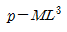
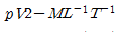
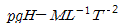
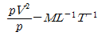
(정답률: 44%)
23. 실내의 난방용 방열기(물-공기 열교환기)에는 대부분 방열 핀(fin)이 달려 있다. 그 주된 이유는?
- 열전달 면적이 증가된다.
- 복사 열전달이 촉진된다.
- 재료비를 절감할 수 있다.
- 겨울철 동파를 막는다.
(정답률: 58%)
24. 평행한 평판 사이로 유체가 압력차에 의해 층류로 흐르고 있을 때, 유체가 받는 전단응력은 어떻게 변화되는가?
- 중심에서 0이고, 벽면으로 직선형태의 응력변화를 가진다.
- 중심에서 벽면으로 곡선 형태의 응력변화를 가진다.
- 벽면에서 0이고, 중심으로 직선형태의 응력변화를 가진다.
- 벽면에서 중심으로 곡선 형태의 응력변화를 가진다.
(정답률: 55%)
25. 관에서의 마찰 손실이 달시(Darcy)의 식으로 표현 될 때, 마찰계수 f1, 직경 d1, 유속 V1, 길이 L1인 관에서의 손실수두와 같은 크기의 손실수두를 갖는 마찰계수 f2, 직경 d2, 유속 V2 인 관의 길이 L2는?
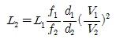
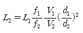
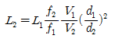
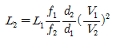
(정답률: 53%)
26. 펌프의 성능해석에 사용되는 속도삼각형
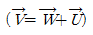
을 그림으로 나타낸 것이다.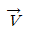
를 펌프로 유입되는 물의 속도라고 할 때, 이들을 알맞게 설명 한 것은?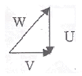
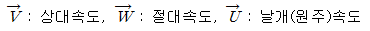
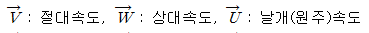
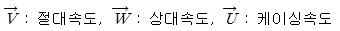
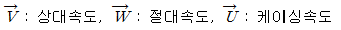
(정답률: 54%)
 : 펌프의 회전수
: 펌프의 회전수27. 내경이 50mm인 소화배관에 물이 260 L/min 으로 흐른다. 압력이 400 kPa 이고 배관의 중심선이 기준면보다 20m 높은 곳에서 소화수가 갖는 전 수두는 약 몇 m인가?
- 61
- 40
- 20
- 12
(정답률: 47%)
28. 안지름 100mm인 파이프를 통해 5m/s의 속도로 흐르는 물의 유량은 m3/min인가?
- 23.55
- 2.355
- 0.517
- 5.170
(정답률: 59%)
29. 압력 7MPa, 온도 150℃ 상태에서 프로판의 압축 성인자 값은 0.55 이다. 프로판의 비체적 (m3/kg)은 얼마인가? (단, 기체상수 R = 0.1886 kJ/kgㆍK 이다.)
- 0.00222
- 0.00404
- 0.00627
- 0.0114
(정답률: 42%)
30. 옥내소화전 설비의 노즐선단 방수압력을 피토관으로 측정한 결과 490 kPa(계기압력)이었다. 본 설비에 사용한 노즐의 구경이 13mm인 경우 방수량은 몇 m3/min 인가?
- 0.125
- 0.249
- 0.498
- 0.996
(정답률: 48%)
31. 직경 5cm의 수평원관에 10℃의 물이 평균속도 0.6m/s로 흐를 때 레이놀즈 수와 유동 상태는? (단, 10℃일 때 물의 동점성계수는 1.31×10-6m2/s 이다.)
- 22.9 (층류)
- 22.9 (난류)
- 22900 (층류)
- 22900 (난류)
(정답률: 58%)
32. 등엔트로피 과정에 해당하는 것은?
- 가역 단열 과정
- 가역 등온 과정
- 비가역 단열 과정
- 비가역 등온 과정
(정답률: 53%)
33. 0.02 m3/s의 유량으로 직경 50cm 인 주철 관속을 기름이 흐르고 있다. 길이 1000m에 대한 손실수두는 몇 m인가? (단, 기름의 점성계수는 0.103 Nㆍs/m2 , 비중은 0.9이다.)
- 0.15
- 0.3
- 0.45
- 0.6
(정답률: 51%)
34. 소방호스의 노즐로부터 유속 4.9m/s로 방사되는 물제트에 피토관의 흡입구를 갖다 대었을 때 피토관의 수직부에 나타나는 수주의 높이는 약 몇 m인가? (단, 중력가속도는 9.8m/s2이고, 손실은 무시한다.)
- 0.25
- 1.22
- 2.69
- 3.69
(정답률: 60%)
35. 교축 과정(throttling process)에 대한 설명 중 맞는 것은?
- 압력이 변하지 않는다.
- 온도가 변하지 않는다.
- 엔트로피가 변하지 않는다.
- 엔탈피가 변하지 않는다.
(정답률: 50%)
36. 소방펌프차가 화재현장에 출동하여 그 곳에 설치되어 있는 수조에서 물을 흡입하였다. 이 때 펌프 입구의 진공계가 60kPa 을 표시하였다면 손실을 무시할 때 수면에서 펌프까지의 높이는 몇 m 인가?
- 0.542
- 0.612
- 5.42
- 6.12
(정답률: 51%)
37. 그림과 같이 밑면이 2m × 3m 인 탱크와 이 탱크에 연결된 단면적이 1m2인 관에 물과 비중이 0.9인 기름이 들어 있다. 대기압을 무시할 때 밑면 AB에 작용하는 힘은 약 몇 kN인가?
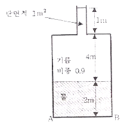
- 64
- 329
- 382
- 412
(정답률: 42%)
38. 검사표면에 있는 지름 2cm의 구멍을 통하여 물이 3m/s로 분출될 때, 구멍을 통한 운동량 유출률은 약 몇 N인가?
- 0.94
- 1.41
- 2.83
- 8.48
(정답률: 37%)
39. 다음 중 음속에 대한 일반적인 설명으로 틀린 것은?
- 동일한 이상기체에서의 음속은 이상기체의 온도가 높은 경우의 음속이 온도가 낮은 경우의 음속보다 빠르다.
- 동일한 온도 및 비열비를 가질 때, 분자량이 큰 이상 기체에서의 음속이 분자량이 작은 이상기체에서의 음속보다 빠르다.
- 밀도가 동일한 경우 체적탄성계수가 튼 액체에서의 음속은 체적탄성계수다 작은 액체에서의 음속보다 빠르다.
- 체적탄성계수가 동일한 경우 밀도가 큰 액체에서의 음속은 밀도가 작은 액체에서의 음속보다 느리다.
(정답률: 43%)
40. 다음 그림은 단면적이 A와 2A인 U자형 관에 밀도 d 인 기름을 담은 모양이다. 지금 그 한쪽 관에 관벽과는 마찰이 없는 물체를 기름 위에 놓았더니 두 관의 액면 차가 h1으로 되어 평형을 이루었다. 이때 이 물체의 질량은?
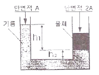
- Ah1d
- 2Ah1d
- Ah1d + Ah2d
- 2(Ah1d + Ah2d)
(정답률: 52%)
3과목: 소방관계법규
41. 소방시설관리업자가 기술인력을 변경해야 하는 경우 제출하지 않아도 되는 서류는?
- 소방시설관리업 등록수첩
- 변경된 기술인력의 기술자격증(자격수첩)
- 기술인력 연명부
- 사업자등록증 사본
(정답률: 57%)
42. 위험물을 취급함에 있어서 정전기가 발생할 우려가 있는 설비에는 정전기를 유효하게 제거할 수 있는 설비를 설치하여야 한다. 다음 중 정전기를 제거하는 방법에 속하지 않는 것은?
- 공기 중의 상대습도를 70% 이상으로 하는 방법
- 절연도가 높은 플라스틱을 사용하는 방법
- 접지에 의한 방법
- 공기를 이온화하는 방법
(정답률: 56%)
43. 피난시설 및 방화시설의 유지ㆍ관리에 대한 관계인의 잘못된 행위가 아닌 것은?
- 피난시설ㆍ방화시설을 수리하는 행위
- 방화시설을 폐쇄하는 행위
- 피난시설 및 방화시설을 변경하는 행위
- 방화시설 주위에 물건을 쌓아두는 행위
(정답률: 70%)
44. 건축허가 등을 함에 있어서 소방본부장 또는 소방서장의 동의를 받아야 하는 건축물 등의 범위가 아닌 것은?
- 차고ㆍ주차장으로 사용되는 층 중 바닥면적이 150[m2] 이상인 층이 있는 시설
- 항공기격납고, 관망탑, 항공관제탑, 방송용 송ㆍ수신탑
- 지하층 또는 무창층이 있는 건축물로서 바닥면적이 150[m2] 이상인 층이 있는 것
- 승강기 등 기계장치에 의한 주차시설로서 자동차 20대 이상을 주차할 수 있는 시설
(정답률: 50%)
45. 다음 중 소방시설관리업의 등록이 불가능한 자는?
- 관리업 등록이 취소된 날부터 1년이 지난 사람
- 소방기본법의 위반으로 실형을 선고받고 그 집행이 끝난 후 3년이 지난 사람
- 소방시설공사업법 위반으로 금고형의 실형을 선고받고 그 집행이 면제된 날부터 2년이 지난 사람
- 위험물안전관리법 위반으로 집행유예를 선고받고 집행유예기간이 끝난 날부터 6개월이 지난 사람
(정답률: 57%)
46. 소화활동설비에서 제연설비를 설치하여야 하는 특정소방대상물의 기준으로 틀린 것은?
- 문화집회 및 운동시설로서 무대부의 바닥면적이 200[m2] 이상인 것
- 근린생활시설ㆍ위락시설ㆍ판매시설, 숙박시설 등으로서 지하층인 것
- 지하가(터널을 제외한다.)로서 연면적 1000[m2]이상인 것
- 지하가 중 터널로서 길이가 300[m] 이상인 것
(정답률: 63%)
47. 다음 ( )안의 알맞은 내용을 바르게 나타낸 것은?
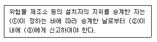
- ① 대통령령 ② 14일 ③ 시ㆍ도지사
- ① 대통령령 ② 30일 ③ 소방본부장ㆍ소방서장
- ① 행정안전부령 ② 14일 ③ 소방본부장ㆍ소방서장
- ① 행정안전부령 ② 30일 ③ 시ㆍ도지사
(정답률: 34%)
48. 특정소방대상물에 설치하는 물품 중 방염처리 대상이 아닌 것은?
- 창문에 설치하는 브라인드
- 두께가 2[mm]미만인 종이벽지
- 무대용 섬유판
- 영화상영관에 설치된 스크린
(정답률: 66%)
49. 소방안전관리자에 대한 강습교육을 실시하고자 할 때 한국소방안전협회 장은 강습교육 며칠 전까지 교육실시에 관하여 필요한 사항을 공고하여야 하는가?
- 14일
- 20일
- 30일
- 45일
(정답률: 37%)
50. 성능위주설계를 할 수 있는 자가 보유하여야 하는 기술력의 기준은?
- 소방기술사 2인 이상
- 소방기술사 2인 및 소방설비기사 2인 (기계 및 전기분야 각 1인)이상
- 소방분야 공학박사 2인 이상
- 소방기술사 1인 및 소방분야 공학박사 1인 이상
(정답률: 48%)
51. 시ㆍ도의 화재 예방ㆍ경계ㆍ진압 및 조사와 화재, 재난ㆍ재해, 그 밖의 위급한 상황에서의 구조ㆍ구급 등의 소방업무를 수행하는 소방기관의 설치에 필요한 사항은 어떻게 정하는가?
- 시ㆍ도지사가 정한다.
- 행정안전부령으로 정한다.
- 소방방재청장이 정한다.
- 대통령령으로 정한다.
(정답률: 41%)
52. 1급 소방안전관리대상물의 관계인이 소방안전관리자를 선임하고자 한다. 다음 중 1급 소방안전관리대상물의 소방안전관리자로 선임될 수 없는 사람은?
- 소방설비기사 또는 소방설비산업기사의 자격이 있는 사람
- 산업안전기사 또는 산업안전산업기사를 자격을 가지고 2년 이상 2급 소방안전관리대상물의 소방안전관리자로 근무한 실무경력이 있는 사람
- 소방공무원으로 7년 이상 근무한 경력이 있는 사람
- 대학교에서 소방안전관리학과를 전공하고 졸업한 사람으로서 2년 이상 2급 소방안전관리대상물의 소방안전 관리에 관한 근무한 경력이 있는 사람
(정답률: 33%)
53. 소방시설공사업의 등록사항 변경신고는 변경이 있는 날로부터 며칠 이내에 하여야 하는가?
- 7일
- 15일
- 30일
- 3개월
(정답률: 41%)
54. 소방시설을 구분하는 경우 소화설비에 해당되지 않는 것은?
- 옥내소화전설비
- 제연설비
- 소화약제에 의한 간이소화용구
- 소화기
(정답률: 55%)
55. 함부로 버려두거나 그냥 둔 위험물의 소유자ㆍ관리자ㆍ점유자의 주소ㆍ성명을 알 수 없어 필요한 명령을 할 수 없는 때에 소방본부장 또는 소방서장이 취하여야 하는 조치로 맞는 것은?
- 시ㆍ도지사에게 보고하여야 한다.
- 경찰서장에게 통보하여 위험물을 처리하도록 하여야 한다.
- 소속공무원으로 하여금 그 위험물을 옮기거나 치우게 할 수 있다.
- 소유자가 나타날 때까지 기다린다.
(정답률: 65%)
56. 화재가 발생하는 경우 화재의 확대가 빠른 고무류ㆍ면화류ㆍ석탄 및 목탄 등 특수가연물의 저장 및 취급기준을 설명한 것 중 옳지 않은 것은?
- 취급 장소에는 품명ㆍ최대수량 및 화기취급의 금지표지를 설치할 것
- 품명별로 구분하여 쌓아 저장할 것
- 쌓는 높이는 10[m]이하가 되도록 하고 쌓는 부분의 바닥면적은 100[m2](석탄ㆍ목탄류의 경우에는 200[m2])이하가 되도록 할 것
- 쌓는 부분의 바닥면적 사이는 1[m] 이상이 되도록 할 것
(정답률: 62%)
57. 지정수량의 몇 배 이상의 위험물을 저장하는 옥내저장소에는 화재예방을 예방규정을 정하여야 하는가?
- 10배
- 100배
- 150배
- 200배
(정답률: 52%)
58. 특정소방대상물의 소방계획의 작성 및 실시에 관한 지도ㆍ감독권자로 옳은 것은?
- 소방방재청장
- 소방본부장 또는 소방서장
- 시ㆍ도지사
- 행정안전부장관
(정답률: 58%)
59. 화재경계지구 안의 소방대상물에 대한 소방검사를 거부ㆍ방해 또는 기피한 자에 대한 벌칙은?
- 100만원 이하의 벌금
- 200만원 이하의 벌금
- 300만원 이하의 벌금
- 500만원 이하의 벌금
(정답률: 26%)
60. 위험물안전관리법에서 정하는 위험물질에 대한 설명으로 다음 중 옳은 것은?
- 철분이라 함은 철의 분말로서 53[μm]의 표준체를 통과하는 것이 60중량퍼센트 미만인 것은 제외한다.
- 인화성고체라 함은 고형알코올 그 밖에 1기압에서 인화점이 21℃ 미만인 고체를 말한다.
- 유황은 순도가 60중량퍼센트 이상인 것을 말한다.
- 과산화수소는 그 농도가 36중량퍼센트 이하인 것에 한한다.
(정답률: 41%)
4과목: 소방기계시설의 구조 및 원리
61. 피난기구 종류의 선정기준과 관계없는 사항은?
- 층의 용도(설치장소별 구분)
- 지하층의 유무
- 층수
- 층의 면적
(정답률: 65%)
62. 다음의 위험물에서 청정소화약제 소화설비를 적용 할 수 없는 대상물은 어느 것인가?
- 제1류 위험물
- 제2류 위험물
- 제3류 위험물
- 제4류 위험물
(정답률: 60%)
63. 분말소화설비에서 분말소화약제 1kg당 저장용기의 내용적 기준 중 틀린 것은?
- 제1종 분말 : 0.8ℓ
- 제2종 분말 : 1.0ℓ
- 제3종 분말 : 1.0ℓ
- 제4종 분말 : 1.0ℓ
(정답률: 75%)
64. 바닥면적이 400m2 미만이고 예상제연구역이 벽으로 구획되어있는 배출구의 설치위치로 옳은 것은?
- 천장 또는 반자와 바닥사이의 중간 윗부분
- 천장 또는 반자와 바닥사이의 중간 아래 부분
- 천장, 반자 또는 이에 가까운 부분
- 천장 또는 반자와 바닥사이의 중간 부분
(정답률: 60%)
65. 상수도 소화용수설비의 소화전 설치간격은 특정소방 대상물의 수평투영면의 각 부분으로부터 몇 m 이하가 되게 설치하여야 하는가? (단, 호칭지름 75mm 이상의 수도배관에 호칭지름 100mm 이상의 소화전을 접속한다.)
- 100m
- 120m
- 130m
- 140m
(정답률: 73%)
66. 차고 및 주차장에 포소화설비를 설치하고자 할 때 포헤드는 바닥면적 얼마마다 1개 이상 설치하여야 하는가?
- 6m2
- 8m2
- 9m2
- 10m2
(정답률: 69%)
67. 다음 중 스프링클러헤드를 설치하지 않아도 되는 곳은?
- 천장 및 반자가 가연재료로 되어 있고 거리가 2m 미만인 부분
- 냉동, 냉장실 외의 사무실
- 병원의 수술실, 응급처치실
- 바닥으로부터 높이가 10m인 로비, 현관
(정답률: 69%)
68. 이산화탄소소화설비의 저장용기의 설치장소에 관한 화재 안전기준이다. 틀린 것은?
- 저장용기를 방호구역 내에 설치할 경우에는 피난 및 조작이 용이한 피난구 부근에 설치하여야 한다.
- 온도가 40℃ 이하이고, 온도변화가 적은 곳에 설치하여야 한다.
- 방화문으로 구획된 실에 설치하여야 한다.
- 용기가 저장된 용기저장실에는, 출입구 등 보기 쉬운 곳에 소화약제의 방사를 표시하는 표시등을 설치해야 한다.
(정답률: 38%)
69. 물분무소화설비의 감시제어반이 갖추어야 할 조건으로 틀린 것은?
- 물분무소화펌프의 작동여부를 확인할 수 있는 표시등 및 음향경보기능이 있어야 한다.
- 물분무소화펌프를 자동으로 기동 및 중단시키는 기능을 갖추어야하며 수동으로 작동시키거나 중단시키는 기능은 꼭 갖출 필요는 없다.
- 비상전원을 설치한 경우에는 상용전원 및 비상전원의 공급여부를 확인할 수 있어야 한다.
- 예비전원이 확보되고 예비전원의 적합여부를 확인 할 수 있어야 한다.
(정답률: 77%)
70. 22900V 의 유입식변압기에 물분무설비를 설치할 때 이격 거리는 얼마로 해야 하는가?
- 70cm 이상
- 80cm 이상
- 110cm 이상
- 150cm 이상
(정답률: 59%)
71. 특정소방대상물의 어느 층에서도 해당 층의 옥내소화전을 동시에 사용할 경우 호스릴 옥내소화전의 각 노즐선단에서의 방수압력은 몇 MPa 이상인가?
- 0.13
- 0.17
- 0.25
- 0.7
(정답률: 63%)
72. 비행기 격납고에 수성막포를 사용하여 포헤드방식의 포소화설비를 하고자 한다. 이 때, 포소화약제는 바닥면적 1m2당 몇 ℓ 이상으로 방사하여야 하는가?
- 수성막포 원액 3.7ℓ
- 수성막포 소화약제 3.7ℓ
- 수성막포 원액 6.5ℓ
- 수성막포 소화약제 6.5ℓ
(정답률: 52%)
73. 폐쇄형 스프링클러 70개를 담당할 수 있는 급수관의 구경은 몇 mm 인가?
- 65
- 80
- 90
- 100
(정답률: 47%)
74. 판매시설의 지하층에 유용한 피난기구로만 조합된 것은?
- 피난용트랩, 피난교
- 피난사다리, 미끄럼대
- 피난교, 미끄럼대
- 피난용트랩, 피난사다리
(정답률: 66%)
75. 스프링클러 설비에 있어서 자동경보밸브에 리타딩챔버를 설치하는 목적으로 옳은 것은?
- 자동경보밸브의 오보를 방지한다.
- 자동배수를 한다.
- 경보를 발하기까지 시간만을 조절한다.
- 압력수의 압력 조절을 행한다.
(정답률: 75%)
76. 연결 송수관의 주 배관이 옥내소화전 또는 스프링클러 설비의 배관과 겸용할 수 있는 경우는 언제인가?
- 구경이 100mm 이상인 경우
- 준비작동식 스프링클러설비인 경우
- 건물의 층고 31m 이하인 경우
- 가압펌프로 따로 설치되어 있는 경우
(정답률: 56%)
77. 다음 중 연결송수관설비의 구조와 관계가 없는 것은?
- 송수구
- 방수기구함
- 방수구
- 유수검지장치
(정답률: 69%)
78. 다음 중 옥내소화전 유효수량의 1/3을 옥상에 설치하여야 하는 것은?
- 지하층만 있는 소방대상물
- 지표면으로부터 당해 건축물 옥상 바닥까지 15m인 소방대상물
- 수원이 건축물의 지붕보다 높은 위치에 설치된 소방대상물
- 주펌프와 동등 이상의 성능이 있는 별도의 펌프로서 내연기관의 기동과 연동하여 작동되거나 비상전원을 연결하여 설치한 경우
(정답률: 58%)
79. 예상제연구역 바닥면적 400m2 이상 거실의 공기유입구의 설치기준으로서 맞는 것은? (단, 제연경계에 따른 구획을 제외한다.)
- 천정에 설치하되 배출구와 10m 거리를 둔다.
- 바닥으로부터 1.5m 이하의 높이에 설치한다.
- 천장과 바닥에 관계없이 배출구와 5m 이상의 직선거리만 확보한다.
- 바닥으로부터 1m 이상의 높이에 설치한다.
(정답률: 42%)
80. 호스릴 분말소화설비에서 하나의 노즐마다 1분당 방사하여야 할 소화약제의 양이 잘못된 것은?(오류 신고가 접수된 문제입니다. 반드시 정답과 해설을 확인하시기 바랍니다.)
- 제1종분말-50kg
- 제2종분말-30kg
- 제3종분말-27kg
- 제4종분말-20kg
(정답률: 48%)